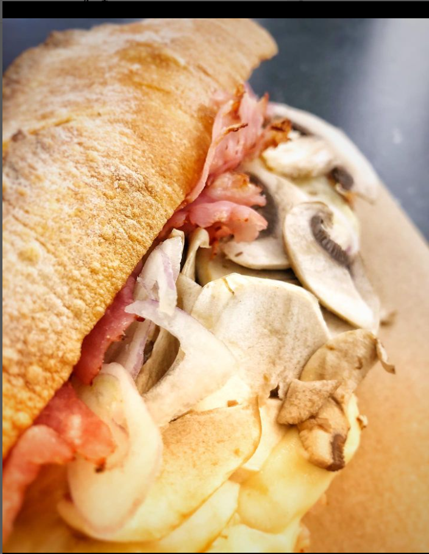

Sandwich Apres-Ski

Description:
This one is quiet big, easy to make and is perfect for the Winter.
If you're like me and you like melt cheese and hot potatoes, follow along !
Carefull, this one is a way better hot.
Ingredients:
- The notorious Baguette
- Sliced ham
- Roasted potatoes
- Thin sliced Raclette
- Sliced shallots
- Mushroom (Sliced too)
The Steps !
- Take half a Baguette and cut it in half
- Add one or two slice of ham, some roasted potatoes and two or more slice of Raclette on top of it
- Put the sandwich in the Oven at 275° for a minute
- Finish it with a bunch of mushrooms and shallots
Return to the Index
See the Davola
See the Medicis